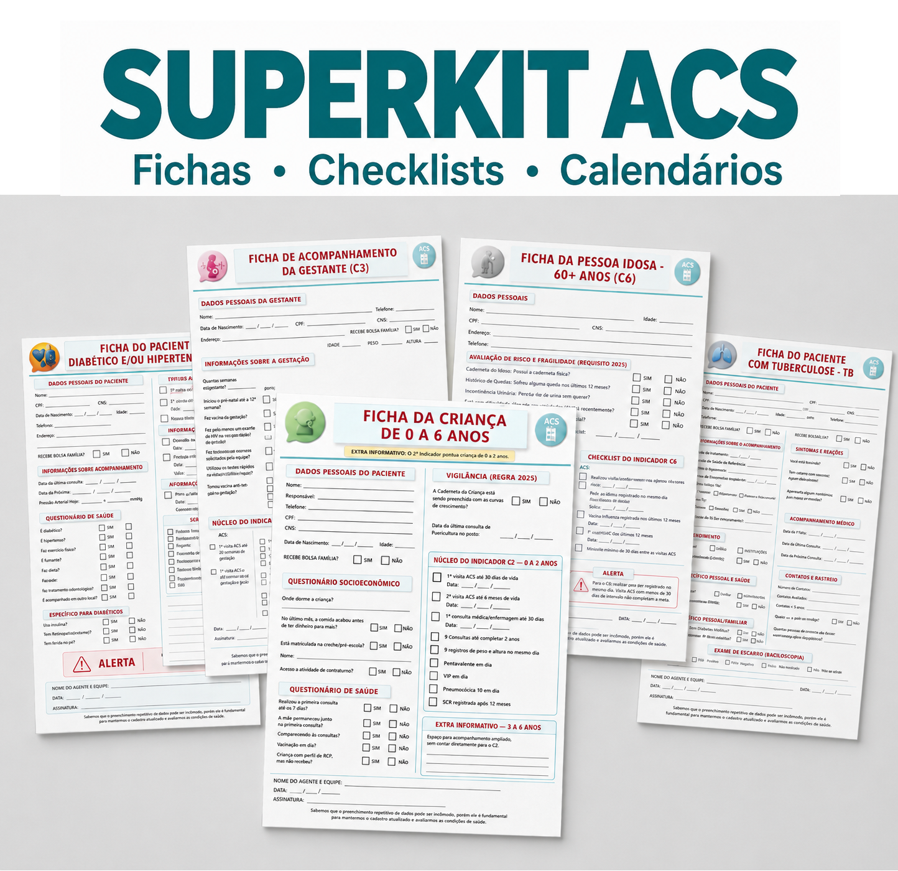

SuperKit ACS
Acompanhamento, registro e conferência sem depender da memória.
- Fichas de acompanhamento atualizadas para o campo
- 7 checklists dos indicadores (C1 ao C7) e rotina
Ir para o SuperKit ACS
A evolução operacional do material de campo.